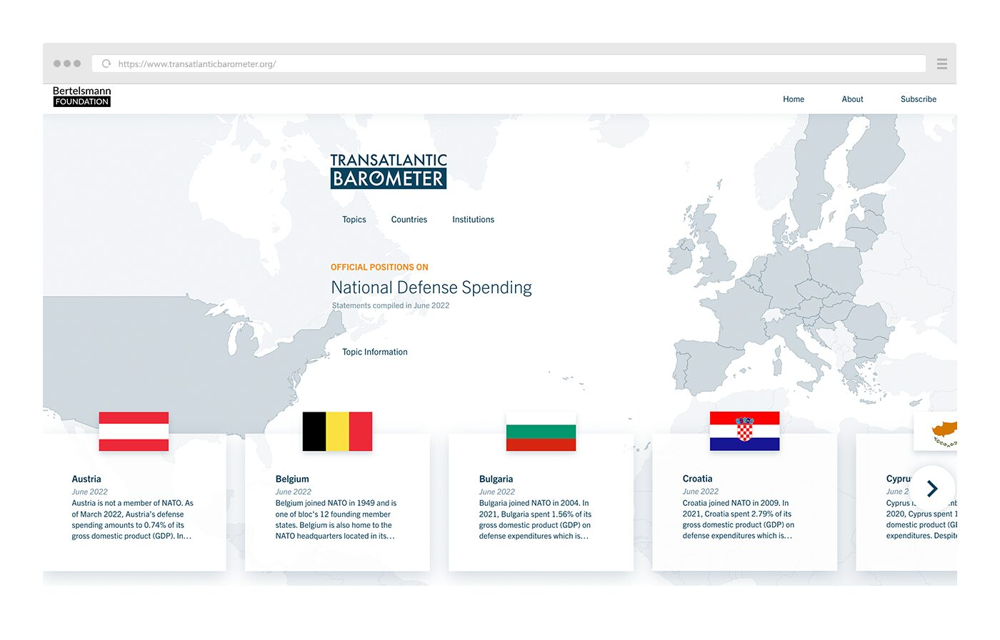
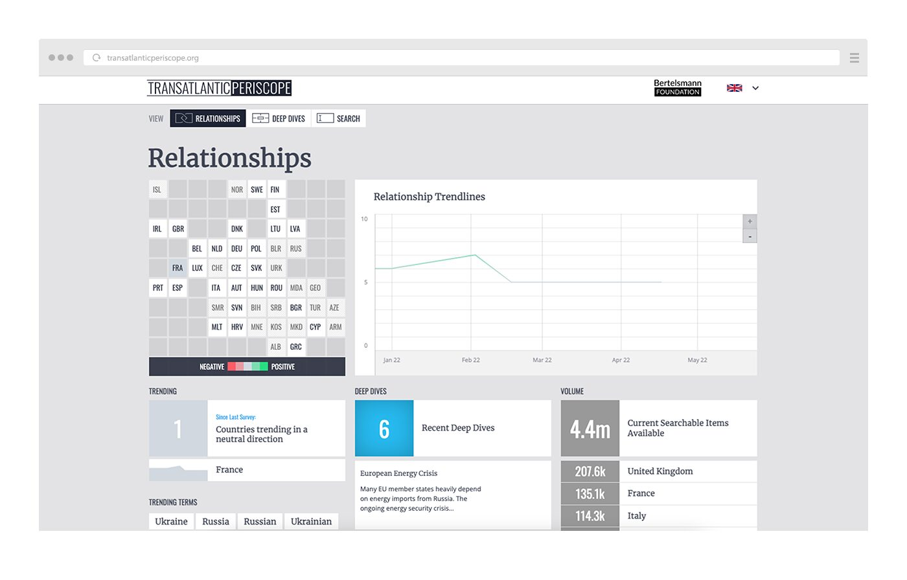
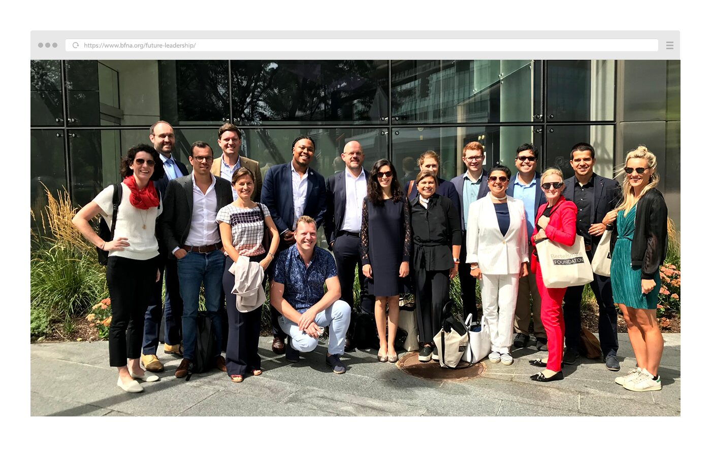
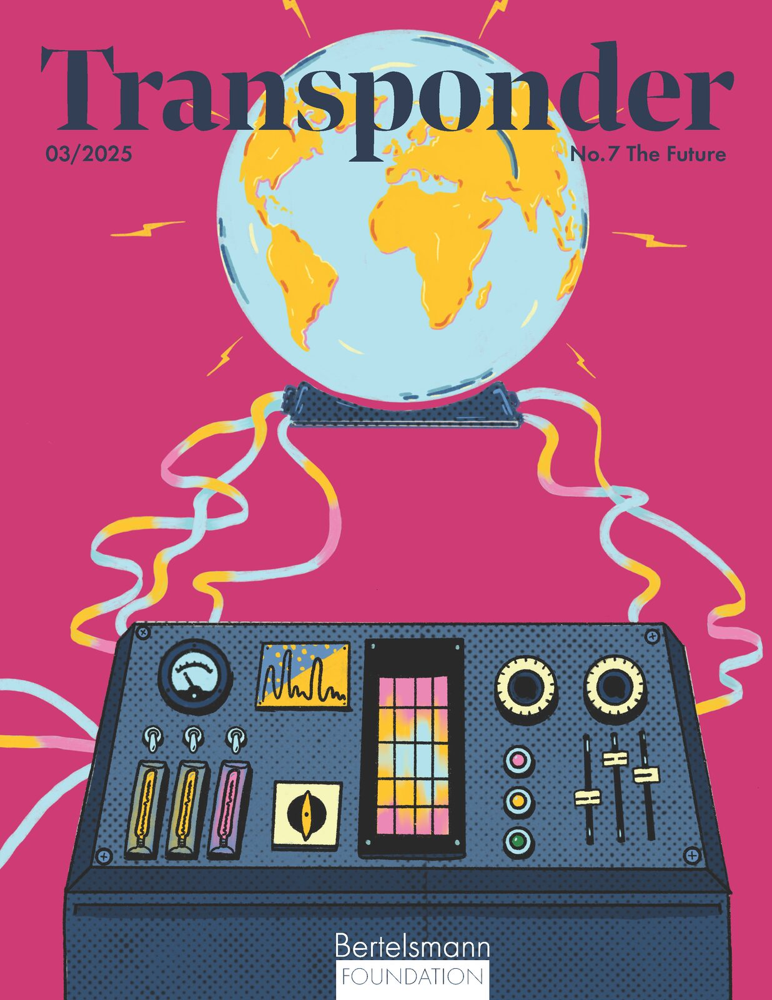
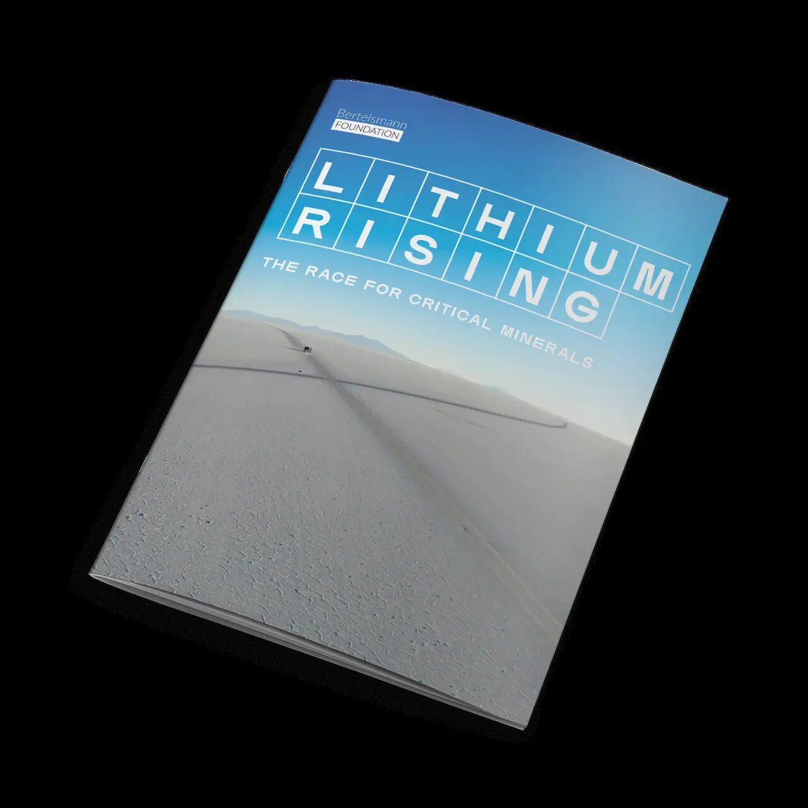
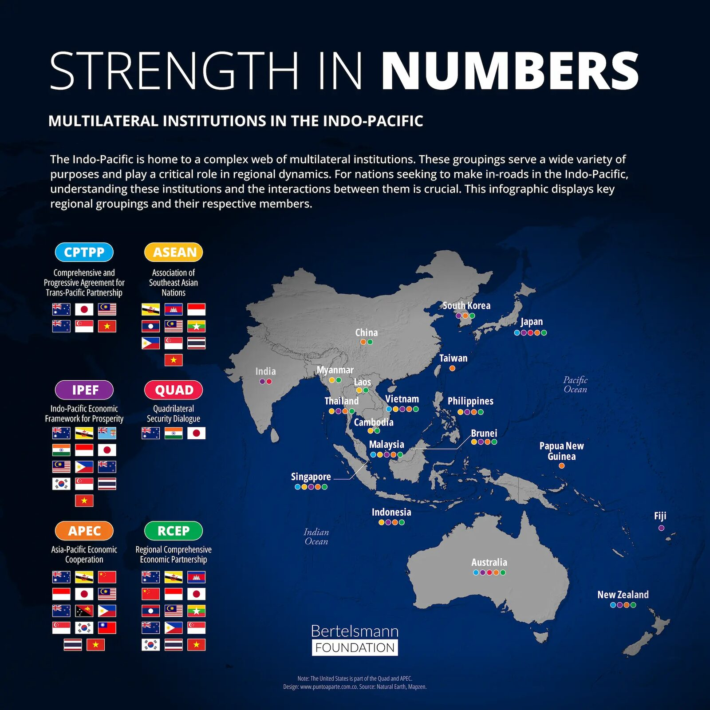
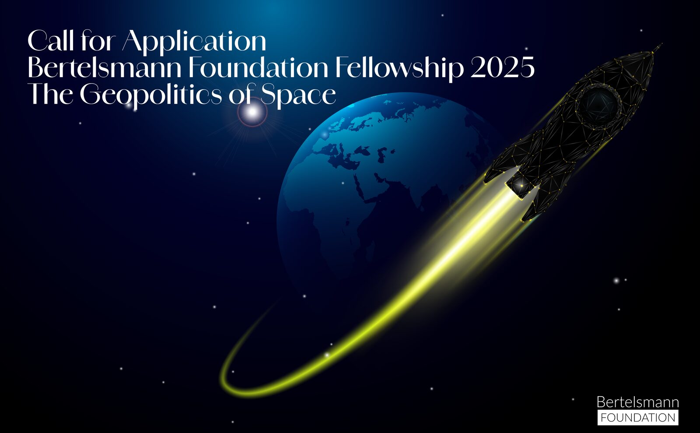

01 / Democracy
Democracy
Democracies around the world are facing profound challenges, from declining trust in institutions and political polarization to technological disruption and changing social and economic conditions.
OpenBFNA · Washington, D.C. · 38.90°N 77.04°W
The Bertelsmann Foundation North America is an independent, nonpartisan think tank dedicated to strengthening the transatlantic partnership and advancing dialogue on the global challenges shaping our future.
Explore our workSection 02
01 / Democracy
Democracies around the world are facing profound challenges, from declining trust in institutions and political polarization to technological disruption and changing social and economic conditions.
Open02 / Transatlantic Relations
The transatlantic community is undergoing profound change. Geopolitical competition, economic shifts, technological disruption, and evolving political landscapes are reshaping the global environment and redefining cooperation.
Open03 / Future Leadership
Strong transatlantic leadership has never been more important. As the United States and Europe confront growing geopolitical uncertainty, effective leadership depends on trust, collaboration, and a shared understanding of the challenges ahead.
OpenSection 03
Platform · 31 actors

A synopsis of the policy positions and engagement of 31 key transatlantic actors: the United States, Canada, the United Kingdom and the EU-27.
Platform · Multimedia

An interactive tool bringing together expert commentary, media coverage, official policy documents, quantitative data and gray literature on the transatlantic relationship.
Podcast · Video
Since its origins, democracy has been a work in progress; today, many question its resilience. Interviews on democracy's past, present and future, with Humanity in Action and host Andrew Keen.
Fellowship · 5 months

A five-month transatlantic hybrid experience designed to foster connection and shared understanding among emerging leaders from the United States and Europe.
Section 04

Transponder · Issue 07
The Bertelsmann Foundation's biannual magazine on the issues shaping the transatlantic relationship: short- and long-form articles, interviews and infographics.
Read the issue04.1 / Highlights

1 Aug 2025 · Report

1 Oct 2025 · Infographic
14 Nov 2024 · Video

10 Dec 2024 · Fellowship call
04.2 / Latest
| 21 Jul 2026 · Article | The Nuclear Option | Transatlantic Relations |
| 7 Jul 2026 · Article | Meddle Meets Mettle | Transatlantic Relations |
| 12 Jun 2026 · Article | Open Debate and Unlikely Bedfellows | Transatlantic Relations |
| 27 May 2026 · Article | What Comes After Z? | Democracy |
| 26 May 2026 · Article | A Kettle Full of Steam | Transatlantic Relations |
| 17 Mar 2026 · Article | Misplaced Passion, Myopic Policy | Democracy |